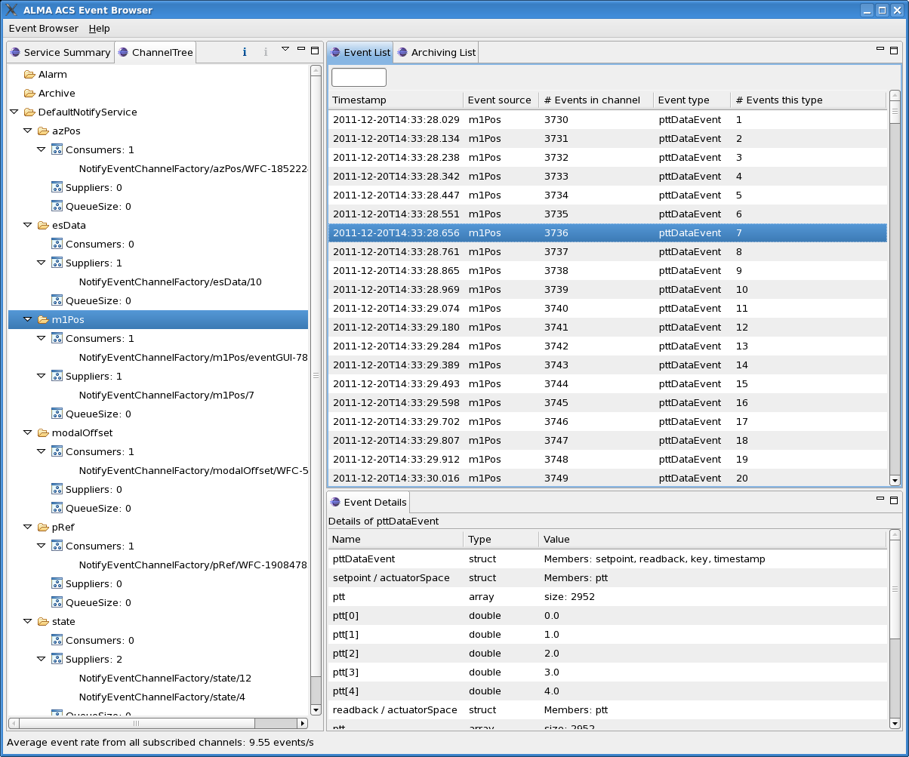

Event GUI Overview
The eventGUI is intended as a replacement for the Python-based acseventbrowser,
which has shown stability problems in the past. The new, Eclipse RCP (Java)-based
eventGUI does not include all the functionality that was offered by its
predecessor, but should be easier to use and understand.
The main Event GUI screen, with the Event Detail View displayed in the lower right-hand quadrant.
|  |
There are three principal views:
Service Summary View
This hierarchical view displays high-level information concerning each of the instances of
the CORBA Notify Service that are currently running under ACS. At the time
of writing, these are:
- Default Notify Service: the first (default) instance to be used by subsystems for event communication;
any non-preconfigured additional instances are shown as well if they are running
- Logging Notify Service: currently carries logs across the network
- Archiving Notify Service: carries those BACI properties for which it is enabled in the (TM)CDB
- Archiving Notify Service: carries alarms across the network
The leaves of the explorer-like tree show the number of consumers and the number of
suppliers for each of these Services. When monitoring is enabled (right-click
anywhere on the View and select "Start monitoring"), the recent (within the last
10 seconds) increase or decrease in the number of suppliers/consumers will be
shown next to the totals.
Channel Tree View
Event List View
Unless filtering (see below) is active, this View displays a scrolling list
of events, updated roughly once per second. A handful of high-level fields are shown
for each event, namely:
- Timestamp:
- Event source:
- Number of events received for this channel:
- Event type:
- Number of events of this type received:
Available memory is checked periodically, and when a low-water mark is reached, the
oldest events will be deleted from the list. Note the contrast between this behavior and
that of jlog, which can buffer log records to disk.
Filtering
This facility, most assuredly in a preliminary, experimental state, can select which incoming events
to display based on their type. Entering any part of a regular expression into the box
above the list will show only those events whose type is matched by the expression, and only
those which arrive after the filter is set. To resume full event display, the filter
text box should be cleared; again this is effective only for events arriving after the
filter box has been cleared.
Clicking on an event in this view will open the Event Detail View.
Event Detail View
This view (still somewhat of a work in progress) displays the decoded contents
of the selected event. In the case of an event that contains one or more
arrays, only the first 5 elements of the array will be shown.
Note that for large events, e.g.. with thousand-element arrays, display
of the event may take some time, as indicated by a rotating cursor.